I’m Geo Armstrong — @Darkreader404 · he/him. Exploring code, human-centered ideas, and market signals. My builds include a hand-controlled drone and an AI-assisted ASL communication project.
Selected builds
01 / EXPERIMENTSContribution signal
02 / CODE MARKET
Activity pulse
03 / CODE VITALS